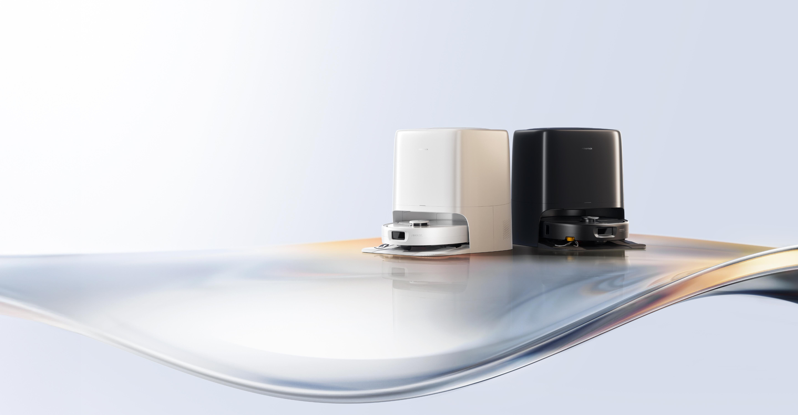
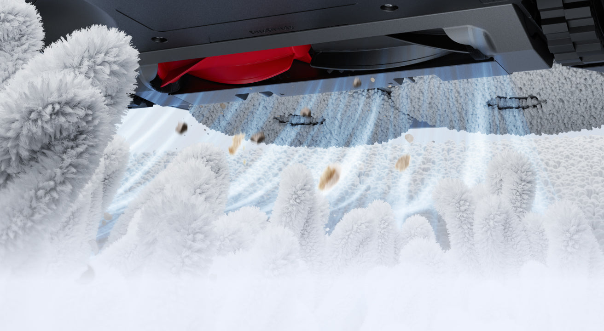
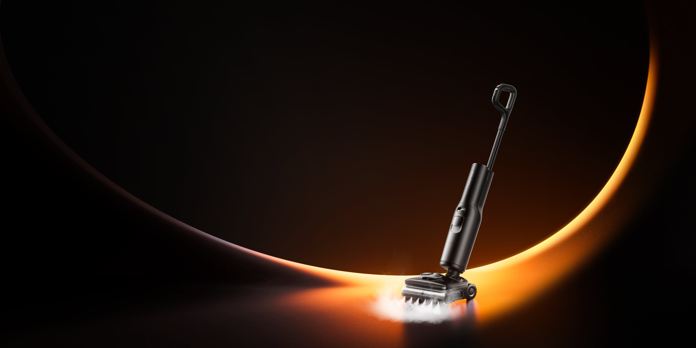
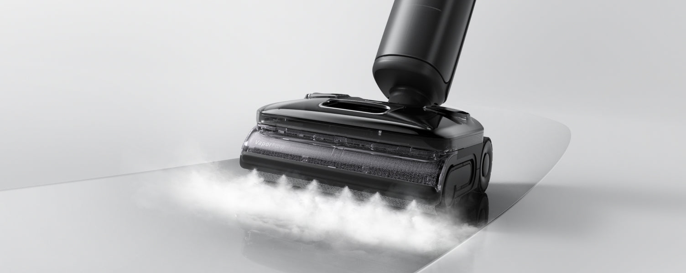

로보락 Q레보 2 프로·F25 스팀 스펙 정리 — 흡입력·온도 숫자가 실제로 뭘 바꾸나요
로보락 Q레보 2 프로(Qrevo 2 Pro)는 흡입력 25,000Pa의 로봇청소기예요. 국내엔 7월 26일 GS홈쇼핑에서 처음 선보일 예정이고, 스스로 움직이며 청소해요.
같은 시기에 공개된 로보락 F25 스팀(F25 Steam)은 흡입·물걸레·스팀 분사가 결합된 무선 청소기예요. 로봇청소기와 달리 사람이 직접 밀면서 쓰고, 7월 29일 CJ온스타일에서 처음 판매될 예정이에요.
이 글은 어떤 제품을 사라는 글이 아니에요. 스펙 숫자가 실제로 뭘 바꾸는지 공식 기준으로 정리한 글이에요.

로보락 Q레보 2 프로 화이트(왼쪽)·블랙(오른쪽) 도크
이미지 출처: 로보락 공식(global.roborock.com)
로보락 Q레보 2 프로, 스펙이 어떻게 되나요
로보락 Q레보 2 프로의 핵심은 25,000Pa 흡입력과 엉킴 방지 브러시예요.
공식 스펙 기준으로 흡입력은 25,000Pa예요. Pa(파스칼)는 청소기 흡입력을 나타내는 단위예요.
흡입력이 높을수록 카펫 속 먼지나 반려동물 털을 빨아들이는 데 유리하다고 알려져 있어요. 마루 같은 단단한 바닥에서도 미세한 먼지를 더 잘 빨아들인다고 알려져 있고요.

카펫 속 먼지를 빨아들이는 로보락 Q레보 2 프로 저면
이미지 출처: 로보락 공식(global.roborock.com)
메인 브러시는 듀오디바이드(DuoDivide) 구조예요. 머리카락과 반려동물 털이 브러시 안쪽으로 모여, 감김 현상이 줄어드는 구조예요.
브러시에 머리카락이 감기면 청소 성능이 떨어져요. 손으로 직접 떼어내야 하는 번거로움도 생기고요. 듀오디바이드 구조는 이 손질을 줄여주는 설계예요.
사이드 브러시는 자동으로 방향을 바꿔가며 돌아요. 모서리·벽 구석까지 쓸어담는 범위가 넓어져요. 한 방향으로만 도는 브러시는 벽 안쪽 먼지를 놓치기 쉬워요. 이 구조는 그 사각지대를 줄여줘요.
물걸레는 플렉시암(FlexiArm) 구조로 움직여요. 벽면과 가구 모서리까지 물걸레가 닿고, 카펫을 만나면 자동으로 분리돼요.
가구 밑이나 벽 모서리는 로봇청소기가 놓치기 쉬운 자리라, 이런 설계가 의미가 있어요. 카펫에 물걸레가 닿은 채로 청소하면 카펫이 젖거나 얼룩이 남을 수 있어요. 자동 분리 기능이 이 문제를 막아줘요.
| 항목 | 내용 |
|---|---|
| 흡입력 | 25,000Pa |
| 메인 브러시 | 듀오디바이드 엉킴 방지 구조 |
| 사이드 브러시 | 자동 역회전 |
| 물걸레 구조 | 플렉시암(모서리 밀착·카펫 감지 시 자동 분리) |
| 물걸레 세척 | 최대 75℃ |
| 건조 | 최대 45℃ 온풍(45dB) |
| 자동 먼지 배출 | 최대 65일(99.90% 항균율) |
| 스마트 연동 | SmartPlan 3.0·Matter 지원 |
물걸레는 최대 75℃로 스스로 세척돼요. 로보락에 따르면 이 수치는 히터 출력부에서 측정한 값이라, 실제 물걸레 온도는 사용 환경에 따라 달라질 수 있어요. 건조는 최대 45℃ 온풍이고, 소음은 45dB로 표기돼 있어요.
고온으로 세척하고 온풍으로 말리는 방식은 물걸레에 남는 냄새·찌든때를 줄이는 데 유리하다고 일반적으로 알려져 있어요.
자동 먼지 배출 기능도 있어요. 최대 65일간 먼지통을 직접 비우지 않아도 돼요. 이때 쓰는 먼지봉투는 99.90% 항균율이 적용된다고 로보락이 밝혔어요.
스마트 기능은 SmartPlan 3.0과 Matter를 지원해요. SmartPlan 3.0은 청소 일정과 이동 경로를 스스로 학습해 조정해주는 기능이에요. Matter는 여러 브랜드의 스마트홈 기기를 하나의 앱에서 연동할 수 있게 해주는 표준 규격이에요.
정리하면, 흡입력과 브러시 구조가 청소력과 유지관리 편의성을 함께 결정하는 셈이에요.
F25 스팀, 스펙이 어떻게 되나요
F25 스팀의 핵심은 95℃ 롤러 세척과 최대 180℃ 스팀 분사예요.
세 기능이 한 기기에 합쳐져 있어서 청소기와 스팀청소기를 따로 쓰지 않아도 돼요.

로보락 F25 스팀, 스팀 분사 모습
이미지 출처: 로보락 공식(global.roborock.com)
롤러는 95℃ 열풍으로 스스로 세척돼요. 바닥엔 최대 180℃ 스팀을 분사해요. 로보락에 따르면 두 수치 모두 롤러·바닥에 직접 닿는 온도가 아니라 히터 출력부에서 측정한 값이에요.

F25 스팀 롤러 헤드, 스팀 분사(VaporFlow) 모습
이미지 출처: 로보락 공식(global.roborock.com)
| 항목 | 내용 |
|---|---|
| 형태 | 흡입+물걸레+스팀 결합형 무선 청소기 |
| 롤러 세척 | 95℃ 열풍 자가세척 |
| 바닥 스팀 | 최대 180℃ |
| 건조 | 95℃ 열풍(5분/30분 선택) |
| 롤러 구조 | 안티탱글 롤러(JawScrapers) |
| 헤드 설계 | 얇은 헤드, 180도 눕힘(가구 밑 청소) |
| 배터리 | 최대 80분(에코 모드) |
| 1회 충전 청소 면적 | 최대 660㎡ |
| 청수 탱크 | 1,000ml |
건조는 95℃ 열풍이에요. 5분·30분 중 골라서 건조할 수 있어요.
롤러는 안티탱글 롤러(공식 명칭 JawScrapers) 구조예요. 머리카락이 롤러에 감기는 걸 줄여줘요.
롤러형 청소기는 머리카락이 낀 채로 오래 쓰면 청소력이 떨어지는 경우가 많아요. 이 구조가 그 문제를 줄여줘요.
헤드는 얇게 설계됐어요. 180도로 눕힐 수 있어서 가구 밑까지 청소할 수 있어요.
가구 밑처럼 좁은 틈은 일반 청소기 헤드가 들어가지 않는 경우가 많아요. 이 구조라면 그런 자리까지 닿아요.
로보락은 F25 스팀의 살균 효과를 TÜV SÜD 테스트 기준 박테리아 제거율 99.9999% 이상으로 밝히고 있어요(스팀·자동세척 모드 기준, 보고서 번호 704012501295-05).
배터리는 최대 80분 쓸 수 있어요. 이건 흡입력을 약하게 낮춘 에코 모드 기준이에요. 같은 조건에서 1회 충전으로 최대 660㎡까지 청소할 수 있어요.
청수 탱크 용량은 1,000ml예요.
정리하면, 온도와 헤드 구조가 습식 청소의 위생과 접근성을 함께 결정하는 셈이에요.
로보락 Q레보 2 프로·F25 스팀, 언제부터 살 수 있나요
로보락 Q레보 2 프로는 7월 26일 GS홈쇼핑에서 처음 선보일 예정이에요.
로보락 F25 스팀은 7월 29일 CJ온스타일에서 처음 판매될 예정이에요. 모바일 라이브 방송 '브티나는 생활'을 통해서예요.
'브티나는 생활'은 CJ온스타일의 모바일 라이브커머스 프로그램이에요.
| 제품 | 첫 판매일 | 채널 |
|---|---|---|
| 로보락 Q레보 2 프로 | 2026년 7월 26일 | GS홈쇼핑 |
| 로보락 F25 스팀 | 2026년 7월 29일 | CJ온스타일 모바일 라이브 '브티나는 생활' |
전자신문 등 국내 매체는 2026년 7월 24일, 이번 출시를 로보락 청소가전 라인업 확대로 보도했어요. 로봇청소기와 습건식 청소기 제품군을 함께 넓히는 차원이라는 설명이에요.
로보락 관계자는 "서로 다른 주거 환경과 청소 방식에 대응할 수 있도록 로봇청소기와 습건식 청소기 제품군을 함께 확대했다"라고 말했어요. 이 발언은 씨넷코리아가 2026년 7월 24일 보도한 내용이에요.
습건식 청소기란 물걸레·스팀처럼 물을 쓰는 청소와, 흡입 위주의 건식 청소를 함께 다루는 제품군을 뜻해요.
로보락 Q레보 2 프로·F25 스팀, 가격은 얼마인가요
가격은 아직 공식적으로 공개되지 않았어요.
2026.07.25 기준으로 kr.roborock.com에 두 제품 공식 페이지가 이미 올라와 있고, 각각 '7.26일 런칭'·'7.29일 런칭'으로 표기돼 있어요. 다만 이 페이지에도 가격 표기나 바로구매 버튼은 없어요.
Q레보 2 프로 가격은 26일 GS홈쇼핑 방송에서, F25 스팀 가격은 29일 CJ온스타일 방송에서 각각 공개될 것으로 보여요.
자주 묻는 질문
Q. 로보락 Q레보 2 프로에도 스팀 기능이 있나요?
아니요. 스팀 분사 기능은 F25 스팀에만 있어요. Q레보 2 프로는 물걸레를 최대 75℃로 세척하지만 스팀은 뿌리지 않아요.
Q. 국내 정식 사전예약을 받나요?
확인되지 않았어요. 지금까지 보도된 내용은 GS홈쇼핑·CJ온스타일 첫 판매 소식뿐이에요. 별도 사전예약 계획은 나오지 않았어요.
Q. 이번에 로보락 신제품이 두 가지 말고 더 있나요?
지금까지 보도된 신제품은 이 두 가지뿐이에요. 케이벤치 등 매체가 전한 로보락 보도자료에도 다른 제품 언급은 없었어요.
참고한 곳
· 로보락 공식(한국) — Q레보 2 프로 제품 페이지
· 로보락 공식(한국) — F25 스팀 제품 페이지
하루 정리
· 로보락 Q레보 2 프로는 흡입력 25,000Pa·최대 75℃ 물걸레 세척을 갖췄고, 7월 26일 GS홈쇼핑에서 처음 선보여요.
· 로보락 F25 스팀은 95℃ 열풍 롤러 세척·최대 180℃ 스팀을 갖췄어요.
· 로보락은 F25 스팀의 살균 성능을 TÜV SÜD 테스트 기준 99.9999% 이상으로 밝혔어요.
가격은 두 제품 다 아직 공개되지 않았으니, 26일 GS홈쇼핑·29일 CJ온스타일 방송에서 확인하는 게 가장 정확해요.